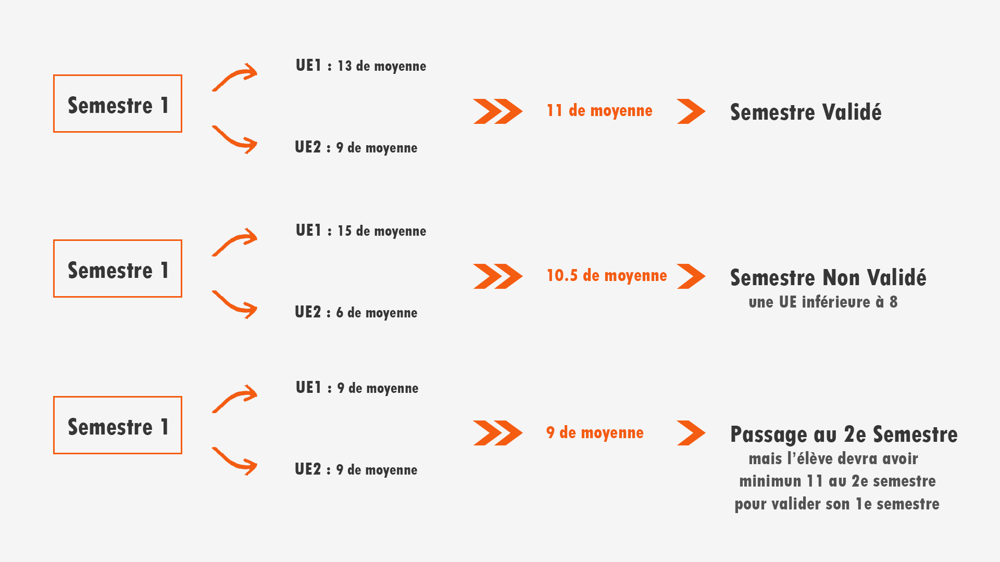

Composition et organisation des cours
Année 2020-2021
Les types de cours au DUT :
- Les TP (travaux pratiques) permettent la résolution de problèmes concrets et la manipulation
de logiciels sur ordinateurs, en demi groupe.
- Les TD (travaux dirigés) correspondent à des travaux ne nécéssitant
pas forcément l'usage d'un outils informatique, en classe entière.
Les exercices sont plus théoriques que pratique comme on peut les retrouver
en TP. Les TD constituent l'intégralité des travaux dans certaines matières non
liées directement à l'informatique (économie, gestion,...) qui sont dénuées de TP.
- Les CM (Cours Magistraux) sont des cours dispensés a l'intégralité de la promotion.
Ils abordent des sujets retraités par la suite en TP, et dressent les bases essentielles des matières concernées.
Détail des cours
Validation d'un semestre
Chaque semestre doit être validé pour pouvoir passer au suivant. Pour valider un semestre, il faut que toutes les UE soient supérieures à 8 et que la moyenne des UE de ce semestre soit supérieure à 10. Si elle est inférieure à 10, l’élève peut passer au semestre suivant mais aura des points à compenser afin que la moyenne des deux semestres soit plus grande que 10 pour valider son semestre.
Exemples :

Les évaluations
Il existe plusieurs types d'évaluations :
- TP noté
- Contrôle d'une ou deux heures (principalement en TD)
- Travail de recherche à rendre
- Questions de cours
- Présentation à l'oral (exposé, projet tutoré...)
- Evaluation de la participation en cours
Les projets tutorés
Les projets tutorés sont des travaux individuels ou de groupes, il y en a quatre en tout (un par semestre). Ils servent surtout à développer des qualités d’organisation et de méthode, et débouchent sur une réalisation concrète (site internet, logiciel...) évalués par les professeurs lors d’un oral de présentation vers la fin du semestre.
Le travail du projet tutoré doit s’effectuer en dehors des heures de cours, sur le temps libre de chacun. Il demande donc un gros investissement personnel et une communication importante entre membres d’une même équipe.
Le stage professionnel
Lors du quatrième semestre, tous les élèves doivent réaliser un stage obligatoire de 12 semaines en entreprise (entre Avril et Juin).
Ce stage peut se réaliser en France ou à l’étranger (Belgique, Allemagne, Canada…) et a pour but de faire découvrir le monde professionnel aux étudiants,
qui sont bien évidemment rémunérés (indemnités minimum légales : environ 4 euros de l’heure, voire plus selon les entreprises).
Ce stage constituant une UE à-part-entière, il débouche sur une évaluation de l’élève (rapport écrit plus soutenance orale) afin de valider son semestre.
ATTENTION !! Si par malheur un élève ne trouve pas de stage, il sera dans l’obligation de redoubler son semestre !
Le DUT à l'international
L' IUT de Dijon propose également la possibilité de faire une année entière ou demi-année à l’étranger.
Dans cette optique, il possède des partenariats au Québec (Chicoutimi, St-Jean de Richelieu) et en Thaïlande (2 universités de Bangkok).
Le nombre de place étant très restreint (1 ou 2 places pour chaque établissement partenaire), seuls les élèves possédant les meilleurs dossiers de l'IUT se voient offrir l’opportunité de ces séjours à l’étranger.